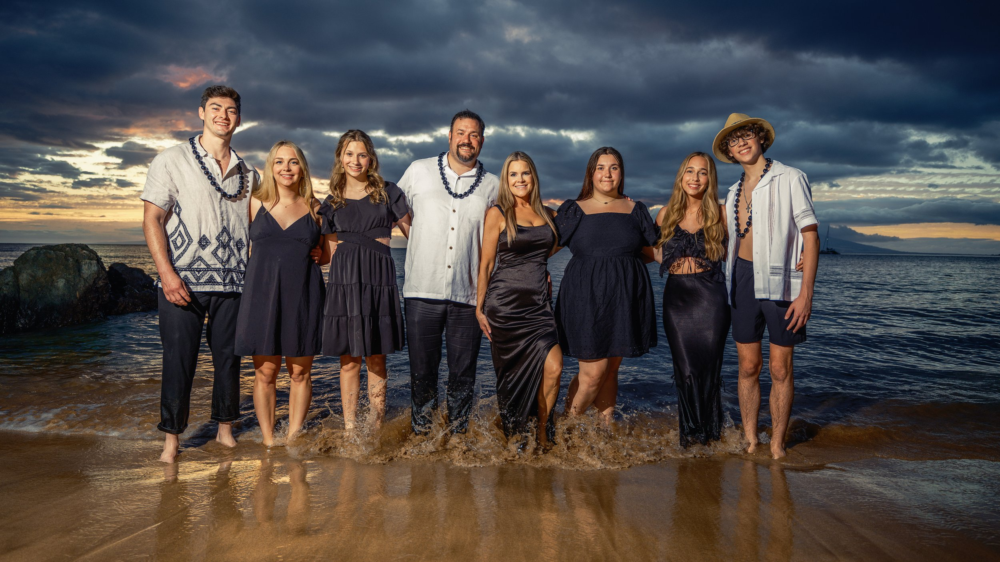

Families
- Begin with one favorite outfit, then pull two or three colors from it.
- Mix subtle textures such as linen, cotton, knits and flowing fabrics.
- Give children room to move, sit and play comfortably.
Comfortable, coordinated and unmistakably you.
Soft neutrals, ocean blues, gentle greens and warm earth tones work beautifully beside sand, water and sunset. Choose two or three colors that belong together, then let each person interpret them differently. The goal is coordination—not identical outfits.
Most importantly, wear something that feels like you. Confidence always photographs better than a trend that feels unfamiliar.
The soft, clean light of a Maui sunrise is especially kind to white, ivory and pale neutrals. It creates an airy, timeless feeling against the sand and water—particularly when the family mixes shades, texture and silhouettes instead of wearing the exact same outfit.

Black, red, dark blue, violet and deep green can look especially beautiful against the warm gold and amber tones of sunset. These colors are familiar, flattering and often already in the family wardrobe.
Choose one or two bold colors as the foundation, then balance them with denim or quieter neutrals. Keeping the shapes and patterns simple allows the color—and your family—to make the statement.
Lightweight, breathable materials are ideal in Maui. Avoid anything that becomes stiff, clingy or transparent if the hem meets the water.
We often photograph barefoot on the sand. Arrive in footwear that is easy to remove, and avoid planning the whole look around shoes that will not appear.
Maui breezes are part of beach life. Choose a hairstyle that can move naturally, and bring a brush, clips or pins for quick adjustments.

Once you reserve, you can always contact us with wardrobe questions specific to your family.
View Sessions & Pricing